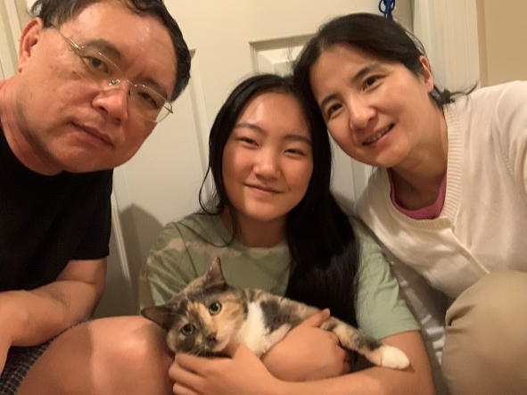

Hello again! Thank you for your interest in me. As you know, my name is Emily Wang. I'm 18 years old, an only child,
and part of the Cornell University class of 2028 and MAMS class of 2024. I like ice cream, making things, hoarding plants, and exploring new places.
I was born and raised in Massachusetts, though I’ve moved towns a few times.
In sixth grade, we moved from Holden to Westborough, where I studied until entering
Mass Academy in my junior year. Cornell is the first time I've been away from Massachusetts for so long, but it's the best desicion I could have made.
The people here at Cornell are a brilliant, supportive community that I’m proud to be a part of. There are so many opportunities
to get involved and pursue my passions, from exploring new dance styles to working on actual projects with a project team.
I look forward to my future here!
(Can you find me in this MAMS group photo?)
For most of my life, my immediate family has just been my mom, my dad, and me. I look up to my parents, both of whom were born with little but built successful lives through relentless pursuit of their goals. They're charismatic and capable, and I hope to make them proud. I got my cat Nellie two years ago, and she has quickly become my favorite family member and taken over all the beds in the house.
My mom's name is Xiaofei E. She's a scientist working on gene therapy. She's patient, diligent, and shares my love of noodles.
My dad's name is James Wang. He's a scientist working on cell therapy. He's smart, ambitious, and shares my love of sweets.
I've always wanted a dog, but when I finally convinced my parents to get a pet, I fell in love at first sight with a sweet and rotund cat. She quickly won over my parents, too. Meet Nellie, a shoe-enthusiast and destroyer of egg cartons!